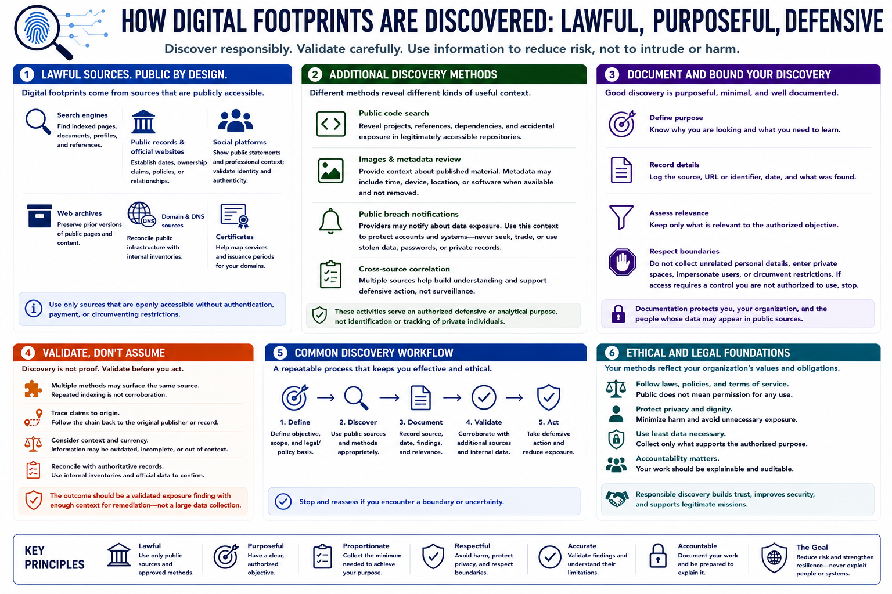

How Footprints Are Discovered
Connecting to LMS... Progress: in progress

Narration
Digital footprints are discovered through lawful review of public sources. Search engines can locate indexed pages, documents, profiles, and references. Public records and official websites can establish dates, ownership claims, policies, or organizational relationships.
Social platforms may show public statements and professional context, but identity and authenticity require validation. Archives can preserve prior versions of public pages. Domain, DNS, and certificate sources can help defenders reconcile their public infrastructure with internal inventories.
Public code search can reveal organizational projects, references, or accidental exposure in repositories that are legitimately accessible. Image and metadata review can provide context about published material. These activities should serve an authorized defensive or analytical purpose, not identification or tracking of private individuals.
Public breach notifications can help users and organizations understand that a provider reported exposure. Notifications are context for defensive account protection; they do not authorize obtaining, trading, or using stolen data, passwords, or private records.
Discovery should be documented and bounded. Record the purpose, source, date, and relevance. Avoid collecting unrelated personal details, entering private spaces, impersonating users, or circumventing restrictions. If access requires a control you are not authorized to use, stop.
Multiple discovery methods may surface the same underlying source. Trace claims to origin and do not mistake repeated indexing for corroboration. The useful outcome is a validated exposure finding with enough context for remediation, not a large collection of unverified personal or technical data.